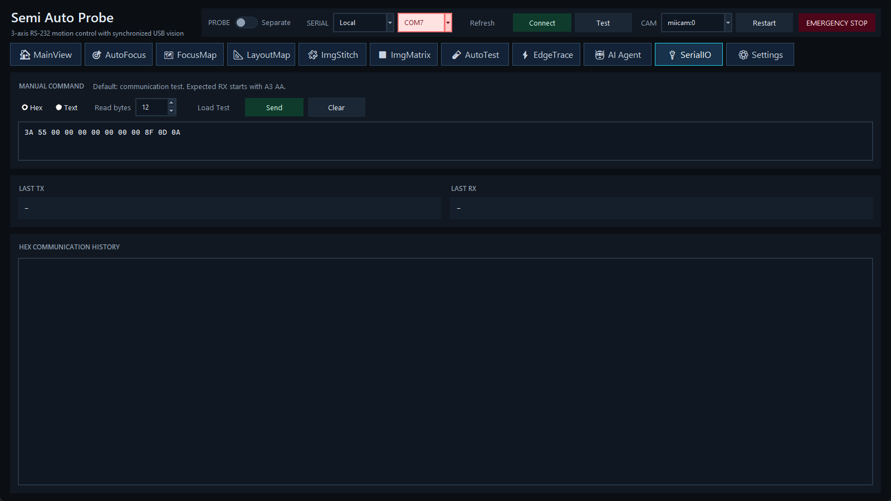

发送协议帧、读取原始响应并诊断本地或远程串口。

A3 AA。| 控件 | 说明 |
|---|---|
| Hex / Text | Hex 按字节输入十六进制；Text 发送文本负载。不要把含空格的文本误当成 Hex。 |
| Read bytes | 发送后尝试读取的字节数，必须为 0 或正整数。 |
| Load Test | 载入默认通信测试帧和说明。 |
| Send | 发送输入内容；输入框中 Ctrl+Enter 也会发送。 |
| Clear | 清除 TX/RX 与通信历史显示，不改变控制器状态。 |
LAST TX 是最近发送帧，LAST RX 是最近响应，HEX COMMUNICATION HISTORY 按时间保留交互。诊断时记录命令、完整响应、端口模式和顶栏状态。
| 现象 | 检查 |
|---|---|
| 没有端口 | Windows 设备管理器、USB/串口驱动、线缆，再按 Refresh。 |
| Connect 失败 | 端口是否被其他程序占用；控制器电源与 RS-232；默认 115200、8 data bits、no parity、1 stop bit。 |
| Test 无响应或前缀错误 | 核对协议、read bytes、发送模式和控制器固件；查看完整历史，不要只依据状态摘要。 |
| Remote 不可用 | SSH key、远端 host、串口桥状态及远端设备占用。 |